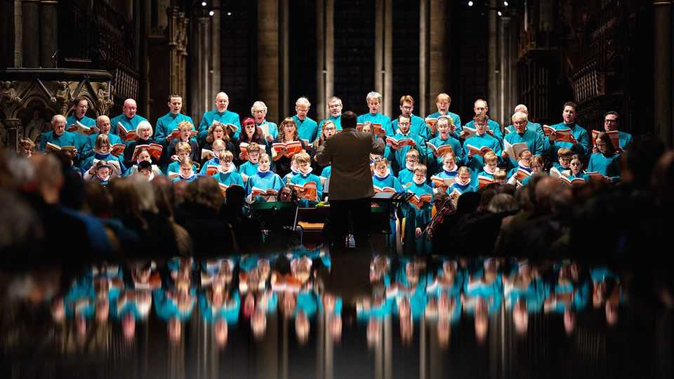

Culture | Choral singing
The world is suffering from a shortage of tenors
Want to join a choir? Can you sing tenor? Answer the second question first
February 12th 2026

The concert of the Taunton Madrigal Society in November 1926 was a triumph. The ballroom in south-west England was “packed to overcrowding”, wrote a local newspaper. Encores were plentiful. Yet the event ended in a minor key. The choir badly needed tenor singers, explained one of its members. Perhaps some in the audience might like to join?
“All my life tenors have been the smallest section,” says Will Todd, a British composer. But the shortage of tenor singers is worsening. The lack of high men’s voices, which add colour and harmony to many choral works, is a growing problem for amateur and church choirs. Given the enormous scale of choral singing, it is a problem for music in general.
Germany has at least 45,000 choirs, about 60% of them linked to churches. A poll for the German Music Council found that 8% of adults sing in a group or publicly—more than play in bands or orchestras. Women outnumber men two to one. Roughly the same sex ratio prevails in Europe, America and Nigeria.
When men do join singing groups, they often avoid the tenor section. The tenor voice is “a cultivated sound”, says John Potter, author of a book on the subject. A man with no vocal training is more likely to have the range of a baritone (a high bass). It does not help that the tenor voice is associated with operatic stars such as Luciano Pavarotti, who could powerfully sing high notes that no amateur can easily reach. And the tenor line in classical choral music can be difficult, with many unexpected notes and alarming leaps.
Sonja Greiner, director-general of the European Choral Association, sings in a German choir that has four or five tenors out of about 45 singers—half as many as would be ideal. Even the most prestigious amateur choirs, which can pick their singers, have grown lopsided. The Orpheus Choir was founded in Glasgow in 1906 with 66 singers, including 15 tenors. Today its new incarnation has 79 singers including 14 tenors. All but one of the tenors are over the age of 60.
The pipeline is worryingly narrow. Many adults learned to sing at school or in churches. But school choirs are at least as unbalanced as adult ones: a large study of American high schools by Kenneth Elpus of the University of Maryland found a sex ratio of seven girls to three boys. Matt Hill of Creighton University, who leads several choirs in Nebraska, points out that many churches have dropped choirs for “praise teams” with electric instruments and microphones.
In many choirs, a few women routinely sing the tenor part. That no longer attracts the spluttering outrage it once did. But conductors rarely see tenorines, as they are known, as a perfect substitute. When sung by women, low tenor notes can sound dark and underpowered. Some choir leaders, including Mr Hill, ask female alto singers to help the tenors with high notes and male basses to help with low ones. (He may also ask the sopranos, often the heftiest section in a choir, to dial it back a bit.)
A more drastic solution is to rewrite music, or to write new music differently. The standard format for choral music is SATB (soprano, alto, tenor, bass). Publishers have arranged even revered choral works such as Mozart’s “Requiem” for SAB voices (soprano, alto, bass) or SAM (soprano, alto, men). Mr Todd, who asks choirs that commission pieces from him about their balance of voices, tries to avoid dividing tenor lines into a higher and a lower part, as earlier composers often did.
This is wise, given choirs’ demographic difficulties. But the loss of a voice is audible all the same. At one point Ms Greiner’s choir in Germany had just three tenors—too few to survive an outbreak of the common cold. The choir tried using sab arrangements, but found it unsatisfactory. The parts seemed too low for the remaining tenors but too high for the basses. As soon as the situation improved slightly, it happily reverted to the traditional arrangements. Four or five tenors is barely enough. ■
For more on the latest books, films, TV shows, albums and controversies, sign up to Plot Twist, our weekly subscriber-only newsletter